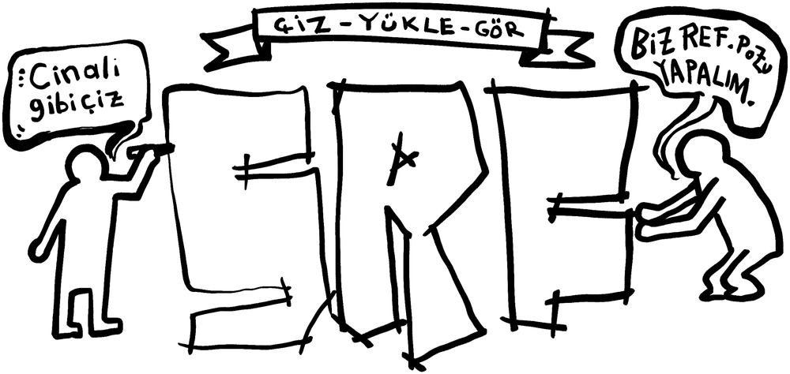
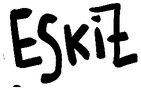
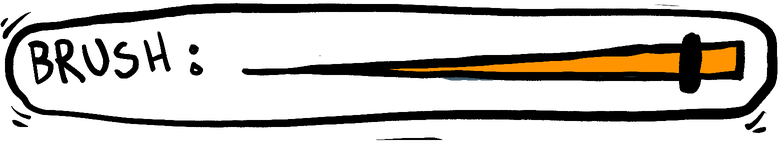
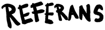
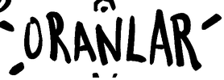
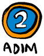
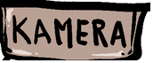

Eklem modu: eklemleri ve güneşi sürükle. Ekleme dokun: uzuv öne/arkaya (dolu nokta öne, boş nokta arkaya). Güneşe dokun: ışık önden/arkadan. mavi taraf figürün solu. Çiz modu: çöp adamı elle çiz, sonra BAS.



